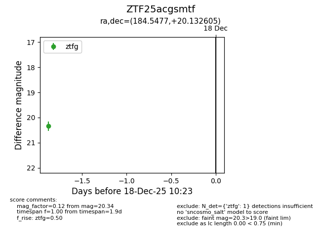
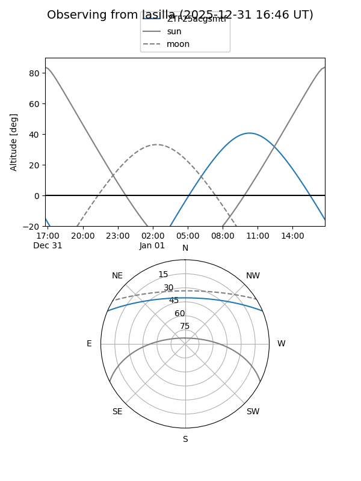
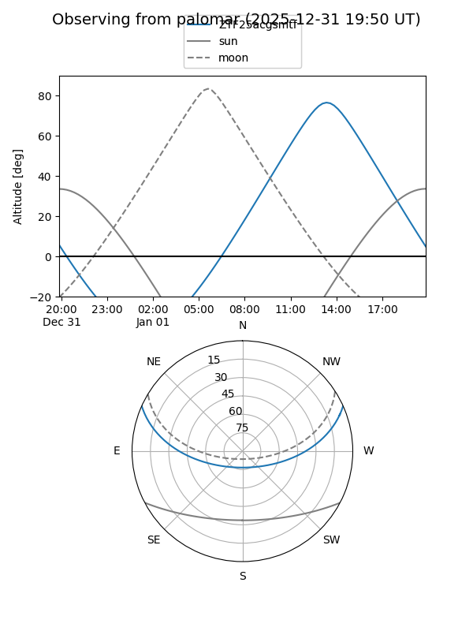

ZTF25acgsmtf
Target ZTF25acgsmtf at 2025-12-31 16:59
Aliases and brokers:
FINK:
Lasair:
ALeRCE:
alt names
ZTF25acgsmtf (ztf,fink_ztf)
Coordinates:
equatorial (ra, dec) = 184.5477,+20.13261
equatorial (HMS+DMS) = 12:18:11.46,+20:07:57.38
galactic (l, b) = (253.7661,+79.66586)
Flags:
Photometry:
last ztfg=20.34, ztfr=20.24
1 ztfg, 1 ztfr detections
Lightcurve

Visibility


Additional plots